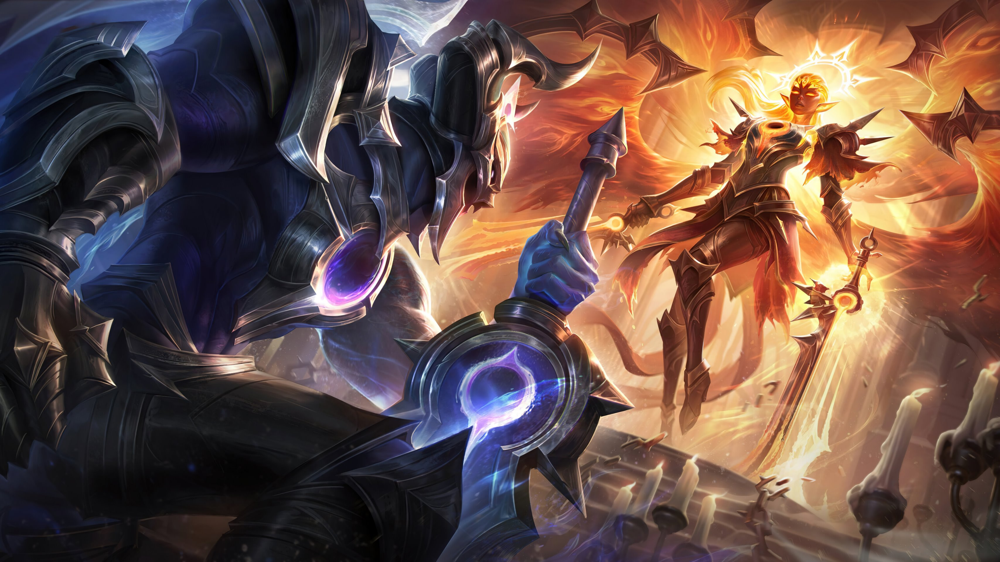

Browser preview. Open the Electron app to change desktop colors.
Color adjustments
A richer picture. On your terms.

OriginalFine-tune your screen
NeutralChanges apply as you drag. Your chosen look stays on until you turn it off.
Your looks
A familiar starting point for every mood.
Profiles stay on this PC. Applying Neutral restores the screen's original color effect.
Make it yours
Quietly there when you need it.
Restore original colorsUse the effect switch or the tray menu.Ctrl + Alt + F12
About this version
Adjustments apply to all displays together, using the desktop color engine tested on your Intel graphics.
Brightness changes the picture, not the panel's backlight. Warmth is a relative adjustment, not a measured temperature.
Independent display controls, gamma curves and HDR processing are not included yet.
This development app starts from its current source folder and local Electron runtime. Moving either location requires updating Windows startup.